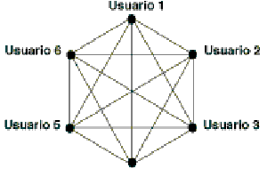
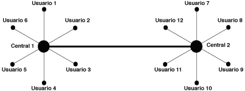
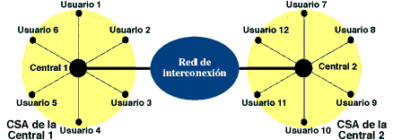

Asymmetric Digital Subscriber Line (ADSL) es una tecnología que, apoyándose sobre una línea telefónica convencional, permite alcanzar velocidades mucho mayores que las conseguidas con módems RTC actuales, particularmente en sentido red-usuario.
ADSL es una tecnología asimétrica, lo que significa que las características de la transmisión no son iguales en ambos sentidos: la velocidad de recepción de datos es mucho mayor que la de envío, lo cual hace de esta tecnología el instrumento idóneo para acceso a los denominados servicios de información, y en particular la navegación por Internet. Ello es debido a que, cuando se accede a Internet, el volumen de información recibido es muy grande, especialmente al recuperar contenidos multimedia (imágenes, vídeo, audio) siendo la información enviada, en general, muy inferior.
Otra característica destacable de ADSL es que permite la compartición simultánea entre el servicio telefónico y los servicios que se ofrezcan sobre ADSL, lo que posibilita, sobre la misma línea, el mantener una conversación telefónica mientras se navega por Internet. Adicionalmente, ADSL ofrece una conexión permanentemente activa (always on, en terminología inglesa) con el proveedor de servicios.
La red telefónica básica se creó para permitir las comunicaciones de voz a distancia. En un primer momento (1.876 - 1.890), los enlaces entre los usuarios eran punto a punto, por medio de un par de cobre (en un principio un único hilo, de hierro al principio y después de cobre, con el retorno por tierra) entre cada pareja de usuarios. Esto dio lugar a una topología de red telefónica completamente mallada, tal y como se muestra en la Figura 1.

Si se hacen las cuentas, esta solución se ve que es claramente inviable. Si se quiere dar servicio a una población de N usuarios, con este modelo completamente mallado, harían falta Nx(N - 1)/2 enlaces. Por esa razón se evolucionó hacia el modelo en el que cada usuario, por medio de un par de cobre se conecta a un punto de interconexión (central local) que le permite la comunicación con el resto.

De este modo la red telefónica se puede dividir en dos partes. La estructura de la red telefónica mostrada en la Figura 2: Conexión mediante una red en estrella es la que básicamente hoy se sigue manteniendo. Lo único es que la interconexión entre las centrales se ha estructurado jerárquicamente en varios niveles dando lugar a una red de interconexión. De este modo, la red telefónica básica se puede dividir en dos partes: la red de acceso y la red de interconexión.

El bucle de abonado es el par de cobre que conecta el terminal telefónico del usuario con la central local de la que depende. El bucle de abonado proporciona el medio físico por medio del cuál el usuario accede a la red telefónica y por tanto recibe el servicio telefónico. La red de interconexión es la que hace posible la comunicación entre usuarios ubicados en diferentes áreas de acceso (CSAs).
Como ya se ha indicado anteriormente, la red telefónica básica se ha diseñado para permitir las comunicaciones de voz entre los usuarios. Las comunicaciones de voz se caracterizan porque necesitan un ancho de banda muy pequeño, limitado a la banda de los 300 a los 3.400 Hz (un CD de un equipo de música reproduce sonido en la banda de los 0 a los 22.000 Hz). Es decir, la red telefónica es una red de comunicaciones de banda estrecha.
En los últimos años, la red de interconexión ha ido mejorando progresivamente, tanto en los medios físicos empleados, como en los sistemas de transmisión y equipos de conmutación que la integran.
Los medios de transmisión han evolucionado desde el par de cobre, pasando por los cables de cuadretes y los cables coaxiales, hasta llegar a la fibra óptica, un medio de transmisión con capacidad para transmitir enormes caudales de información. Los sistemas de transmisión han pasado de sistemas analógicos de válvulas hasta llegar a sistemas de transmisión digitales. Por último, la capacidad de los equipos de conmutación empleados ha ido multiplicándose hasta llegar a centrales de conmutación digitales con capacidad para conmutar decenas de miles de conexiones a 64 Kbps.
Por ejemplo, los modernos anillos ópticos que se están desplegando permiten velocidades de transmisión de datos de 2,48832 Gbps, o lo que es lo mismo, de unas 38.000 comunicaciones telefónicas simultáneas, o de unos 1.500 canales de vídeo en formato MPEG2 (calidad equivalente a un vídeo en formato VHS) aproximadamente. Y ya se dispone de sistemas de conmutación capaces de trabajar con estos caudales. Con todos estos datos, parece que la red de interconexión está capacitada para ofrecer otros servicios además de la voz: servicios multimedia de banda ancha.
| . |
|
|